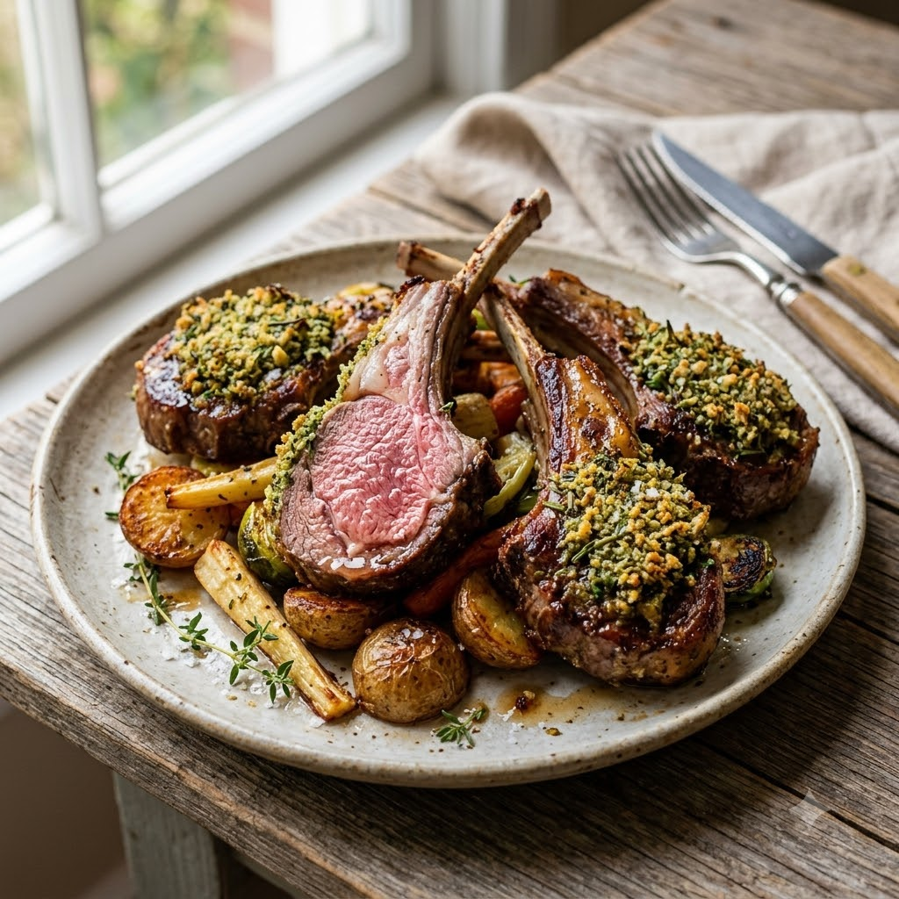

Lamb Chops with Herb Crust

Lamb Chops with Herb Crust
Airfryer – Grill 190°C 15 min — Serves 4
Prep ahead: Rub chops with the oil, garlic and herb mix and rest 20 minutes at room temperature before grilling.
Ingredients
- 6 lamb chops
- 1 tbsp olive oil
- 1 tbsp mixed dried herbs
- 2 cloves garlic (lehsun), minced
- Salt & pepper to taste
Method
1Preheat: Preheat the Airfryer to 190°C for 4 minutes before adding the food to the basket.
2Rub chops with oil, garlic, herbs, salt and pepper; rest 20 minutes.
3Arrange in the basket without overlapping.
4Grill at 190°C for 15 minutes, turning once, for medium doneness.
5Rest 5 minutes before serving.